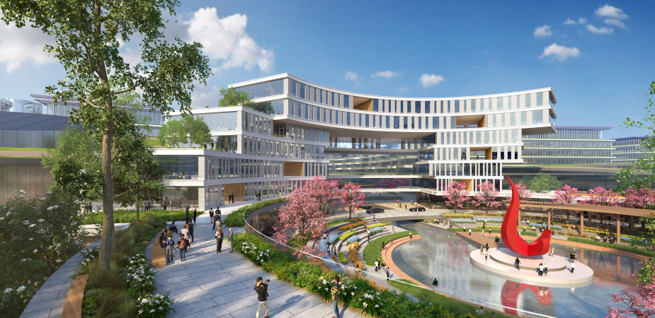

High Decision Cost
- Station siting and route design are multi-million infrastructure bets.
- Wrong siting or wind-driven route deviation creates expensive rework.
- The 鈥渂uild first, validate later鈥?model amplifies financial risk.
Build-first and validate-later means high capital exposure, high uncertainty, and high waste.


"Fly first, collect data later" is dead. We must see results before we spend. The era of 鈥渇ly first, test later鈥?is over. We must see outcomes before spending.
A compact view of the three core engines behind AirGroundLAB.


Scroll down to explore each module in depth (Unity + Python dual-engine architecture).
Run city-scale delivery simulations across global metropolitan regions.


基于高保真物理引擎模拟无人机在风场中的姿态、速度、载重与能耗变化， 让飞行策略在上线前完成可视化验证。

接入真实城市路网数据，统一呈现地面车辆路径与低空航线关系， 支持跨区域、跨城市的配送网络规划与瓶颈分析。
利用大语言模型模拟用户评论、作息时间、点单习惯与人群分布， 构建更接近真实需求波动的订单行为场景。
从参数输入、模拟运行到结果对比自动完成，输出可解释的洞察报告， 帮助团队快速选出最优策略与资源配置方案。
Initialize the experiment, load assets, and validate baseline parameters to ensure reproducible simulation conditions.


同类平台对比：我们是唯一同时覆盖“物理飞行 + 物流网络 + 社会需求 + AI 决策”的一体化方案。
视觉与物理高保真派
强在飞控与感知训练，但缺少订单流、车队协同和商业 ROI 分析。
microsoft.github.io/AirSim宏观物流与运筹学派
强在网络与资源规划，但无法模拟真实风场、飞行偏移等低空物理风险。
anylogic.com城市低空空域管理派
强在合规与防冲突，但不面向商业运营，不解决空地协同配送效率问题。
anratechnologies.com全场景协同决策派
融合高保真物理仿真、真实路网与 LLM 用户画像，输出端到端 AI 洞察报告。
airgroundlab demo结论：从“能飞”到“能运营”，我们提供真正可落地的低空商业决策底座。